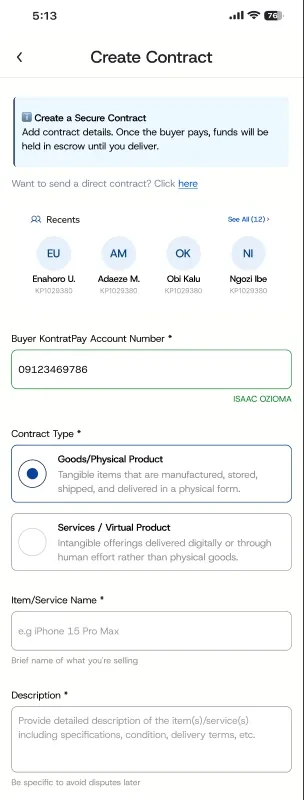
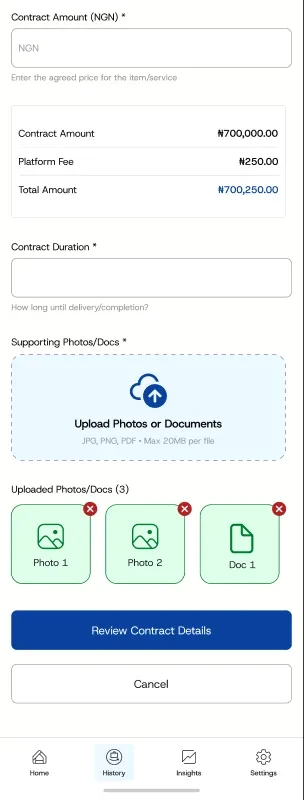
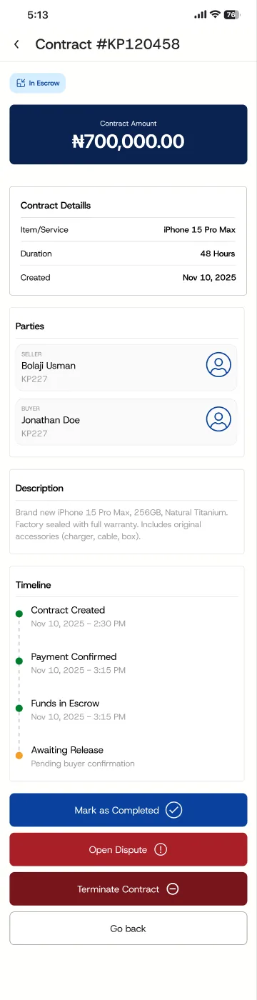
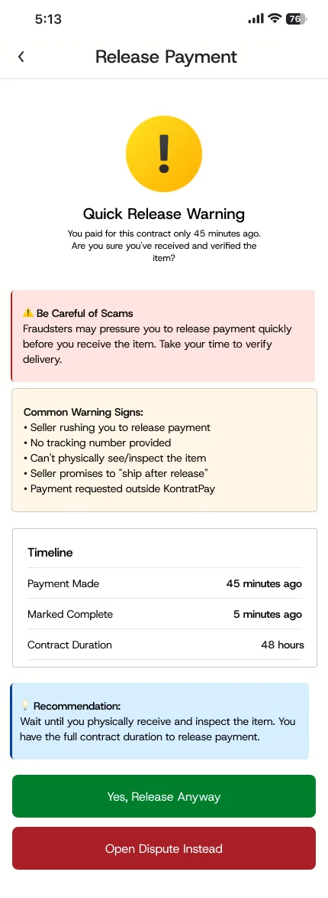
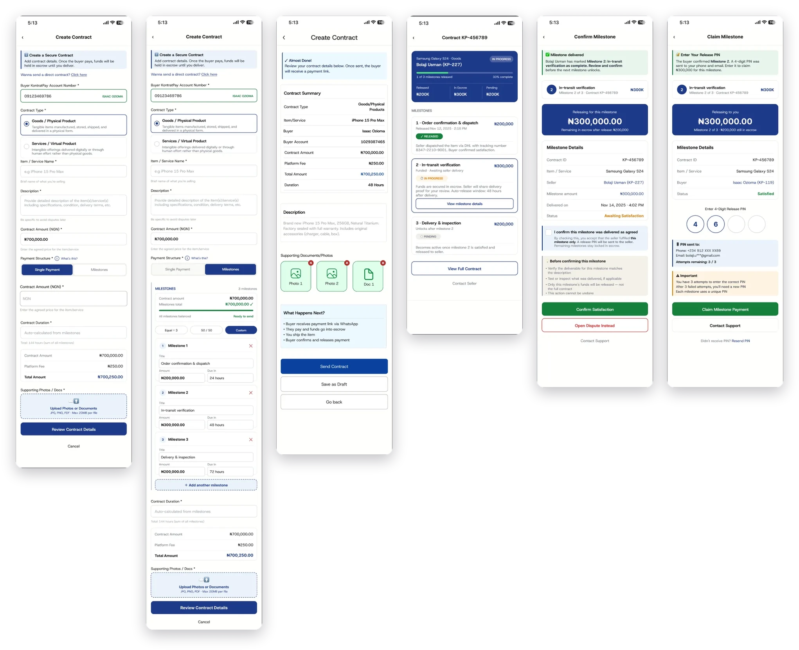
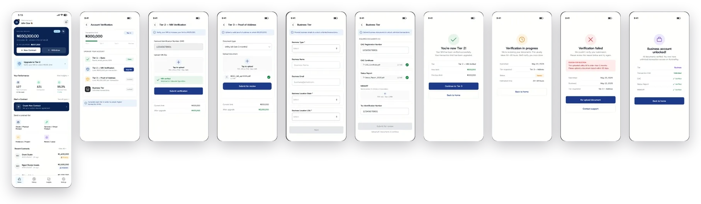
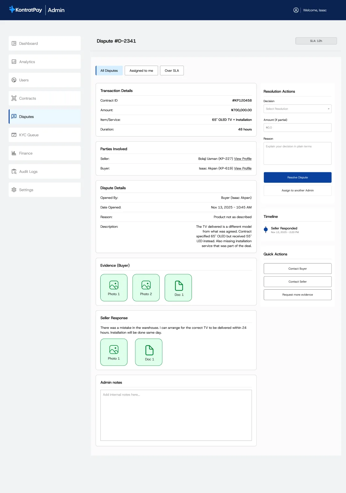

Payments between people who don’t trust each other yet
An escrow app for Nigerian buyers and sellers. Every deal becomes a contract both sides agree to before any money moves.

Online trade in Nigeria runs on trust, and trust is expensive
Buying a phone from an Instagram vendor or a laptop from a Computer Village dealer usually means one side takes all the risk. The buyer pays first and hopes the item arrives as described. Or the seller ships first and hopes to get paid.
Both sides lose: buyers get scammed or sent the wrong item, and honest sellers lose sales to people who won’t risk paying a stranger.
The goal: hold the buyer’s money safely until both sides agree the deal is done, with a fair way out when it isn’t.
From PRD to the last edge case
As co-founder I owned product. I wrote the PRD, designed the mobile app and the admin back office end to end, and built the pitch deck.
Agree on the deal before any money moves
The seller creates a contract: what’s being sold, how much, and how long delivery should take. The buyer gets a payment link, and their money sits in escrow until the deal completes.
- Confirm who you’re paying. Entering an account number shows the holder’s name before anything is sent.
- Goods or services. Each type gets the right fields and terms, because delivering a phone and delivering a logo are different things.
- Write it down now, argue less later. The description asks for specifics such as model, condition and accessories, so both sides have something concrete to point to in a dispute.
- No surprise fees. The platform fee and total appear before the contract is sent.


Add friction exactly where scams happen
The most common escrow scam is simple: a seller pressures the buyer into releasing payment before the item arrives. A plain “Release payment” button would make that easy.
If a buyer tries to release soon after paying, the app pauses them. It shows how long ago they paid, lists common warning signs, and offers Open dispute as an equal choice. Honest buyers lose a few seconds; pressured buyers get a reason to stop.
Confirmation is split between the two sides. The buyer confirms they’re satisfied, with no PIN to remember. The seller then claims the money with a one-time release PIN.


Milestones for bigger deals
Large orders and service jobs don’t finish in one go, so the seller can split a contract into milestones: dispatch, in-transit check, delivery and inspection. Funds release one milestone at a time.
- Presets first. Equal split, 50/50 or custom, so most people don’t start from a blank form.
- The totals must add up. The contract can’t be sent until the milestones match the contract total.
- Release only what’s due. Confirming milestone 2 releases milestone 2 only, and the screen shows what stays in escrow.

Start small, then earn bigger limits
Full ID checks at sign-up would put off first-time users, and skipping them isn’t an option for a regulated money product. So verification is tiered: start with the basics, and unlock higher limits as you verify more.
- Tier 1: basic profile. Tier 2: NIN. Tier 3: proof of address. Business: CAC documents.
- Every upgrade screen shows the current limit and the limit after upgrading.
- Failed states say why a document was rejected and what to upload next.

When deals go wrong, people decide
Disputes aren’t settled automatically. Either side can open one with evidence, the other side responds, and a KontratPay admin decides.
I designed the back office for that admin: evidence from both parties, and a resolution panel that supports full release, full refund or a partial split. Every decision needs a written reason. An SLA timer and an “Over SLA” queue stop disputes from going quiet.
The back office also covers the KYC review queue, an identity check against the user’s BVN record, and audit logs of every admin action.

Crowdfunding, kept small on purpose
The escrow model works for group money too: people contribute to a goal, and funds release only when the organiser proves what they promised. I scoped v1 down to one release, no milestones, and kept an Updates tab so contributors have a reason to come back. 16 screens across create, share, contribute and release.
Designed end to end
The app, back office and crowdfunding flows are fully designed. I also made the brand, landing page, pitch deck and launch video.